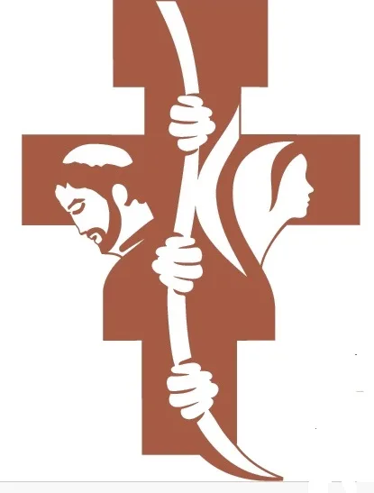

I · La noche fría
En la fría noche de 1223, en un rincón llamado Greccio, san Francisco quiso ver con sus propios ojos la incomodidad y la pobreza en la que nació el Hijo de Dios.
«Un asombro que encendió la historia…»
Cristo de la Paz · Greccio hoy
Hoy, en el Cristo de la Paz, niños y mayores vuelven a hacer presente el Belén, como Francisco en Greccio.
Cristo de la Paz · Una familia
Una comunidad que celebra, acoge y transmite la fe a los más pequeños.
Cristo de la Paz · Un nuevo Greccio
Niños y jóvenes que quieren hacer de su vida un nuevo Greccio.
Cristo de la Paz · Te esperamos
Esta Navidad, te esperamos en la Parroquia Cristo de la Paz.
«Franciscanos de Carabanchel»
El Portal de Belén
Navidad 2026 · El deseo
¡Pazy Bien!
Que la luz del portal de Belén ilumine tus pasos y la sencillez del Poverello inspire cada día del nuevo año.

Feliz Navidad FranciscanaParroquia del Cristo de la PazFranciscanos de Carabanchel